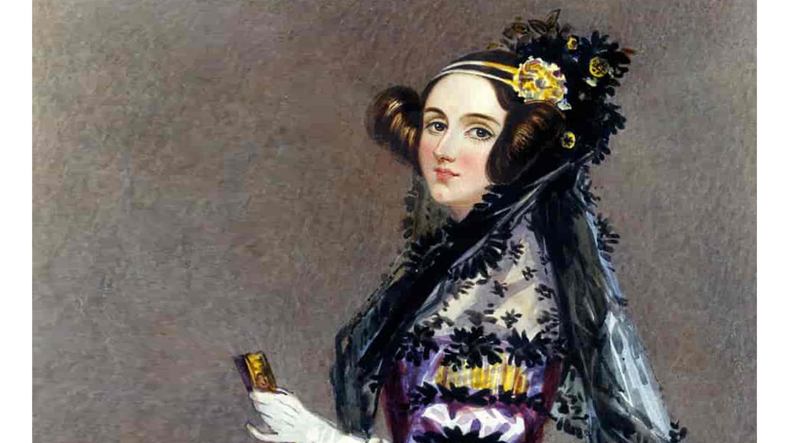

Go back to the main page

De tout d'abord, on va presenter Ada Lovelace, une programmeuse britannique. Née en 1815 à Londres au Royaume-Uni, elle est principalement connue pour avoir créer le premier programme informatique et algorithme dans l'histoire en 1842, nommé Note G, pour une de les ancêtres de l'ordinateur moderne, la machine analytique de Charles Babbage. Après son décès en 1852, elle est ensuite tombée dans l'oubli pendant une longue siècle, jusqu'au années 1980, quand un langage de programmation portant son nom Ada est apparue pour la première fois et suite à sa popularité posthume qui continue jusqu'à maintenant, elle est reconnue comme une véritable role-modèle pour les personnes qui veulent travailler dans l'informatique. Dans un premier temps, on va parler de comment elle s'est intéressé au maths et dans un second temps, sa notoriété après sa mort.
First, we are going to present Ada Lovelace, an British programmer. Born in 1815 in London, England, she's primarily known for creating the first computer program and algorithm in history in 1842, named Note G, for one of the predecessors of modern-day computers, Charles Babbage's analytical engine. After her death in 1852, she became completely forgotten for a long century until the 1980s, when a programming language bearing her name appeared for the first time and following her posthumous popularity that continued to this day, she became a true role model for people who want to work in computer science. First, we'll talk about how she became interested in math and then her posthumous fame.
Premièrement, en 1833, Mary Somerville, sa tutrice, presente Ada à Charles Babbage et elle est impressionée par ses machines de calcul. Dans une periode de 9 mois, entre 1842 et 1843, Ada traduit un article scientifique de l'ingénieur et mathématicien italien Luigi Federico Menabrea sur la machine analytique de Babbage en anglais grâce à la proposition de Wheatstone pour un journal nommé Scientific Memoirs, qui spécialise sur les articles scientifiques étrangères, et la traduction a été présentée à Babbage lui-même, qui la proposé de augmenter la traduction avec un algorithme et des notes. Eventuellement, le programme résultant de l'algorithme est devenu le première programme informatique dans le monde et elle est citée souvent comme la première programmeuse informatique pour cet raison, mais d'après l'article Wikipedia sur elle en anglais, le machine analytique n'as pas pu être construite, suite à une conflicte que Babbage avait avec son ingénieur et les fonds inadéquates, sauf pour une prototype crée entre 1871 et 1906, et le programme n'as jamais été testée. Puis, Ada Lovelace décéde en 1852 et par sa demande, elle est ensuite enterré avec son père, Lord Byron, dans une église à Nottinghamshire.
First, in 1833, Mary Somerville, her tutor, introduced Ada to Charles Babbage, and she was impressed by his calculating machines. During a period of 9 months, between 1842 and 1843, Ada translated a scientific article from the Italian engineer and mathematician Luigi Federico Menabrea on Babbage's analytical engine to English thanks to Wheatstone's proposal for a journal called Scientific Memoirs, which specialized on foreign scientific articles, and the translation was presented to Babbage himself, who offered to expand the translation with an algorithm and notes. Eventually, the program resulting from the algorithm became the world's first computer program and Ada's often cited as the first computer programmer for this reason, but according to the English Wikipedia, the analytical engine couldn't be built due to Babbage's conflict with an another engineer and inadequate funding, except for a prototype made between 1871 and 1906, and the program was never tested. Then, Ada Lovelace died in 1852 and was subsequently buried by her request next to her father Lord Byron at a church in Nottinghamshire.
Après son décès en 1852, Ada Lovelace est tombée dans l'oubli pendant des siècles suite à l'évolution de la technologie de temps en temps, jusqu'en 1953, quand les notes de Lovelace sur le machine analytique de Charles Babbage a été republiée comme un appendice au livre de Bowden, Faster than Thought: A Symposium on Digital Computing Machines. Puis, un langage de programmation, nommée Ada, est parue dans les années 1980, et elle est devenue une véritable influence partout dans le monde entier, grâce à les inaugurations et créations eventuelles de plusieurs batimênts, initiatives, produits, médias, etc. dans les informatiques portant son nom.
After her death in 1852, Ada Lovelace became completely forgotten for centuries due to the evolution of technology over time until 1953, when her notes on Charles Babbage's analytical engine were republished as an appendix to Bowden's book, Faster than Thought: A Symposium on Digital Computing Machines. Then, a programming language, named Ada, appeared in the 1980s, and she became a real influence around the world, thanks to the inaugurations and eventual creation of buildings, initiatives, products, media etc in the computing scene bearing her name.
Et afin de conclure cet preséntation, on peut enfin voir que dans quelques années après son décès en 1852, Ada Lovelace est reconnue par non seulement son pays, mais le monde entier, comme la première programmeuse informatique dans l'histoire, et une véritable role-modèle à tous les personnes, quelque soit un homme ou une femme, qui veulent travailler dans les métiers de l'informatique. Merci de avoir lu cette page jusqu'à la fin, et je vous souhaites tous une bonne journée. A bientôt!
And to conclude this presentation, we can finally see that in several years after her death in 1852, Ada Lovelace is recognized not only by her country but worldwide, as the first female computer programmer in history, a true role model for all people regardless of their gender who want to work in the IT industry. Thank you for reading this page to the end, and I wish you all a good day. See you soon!